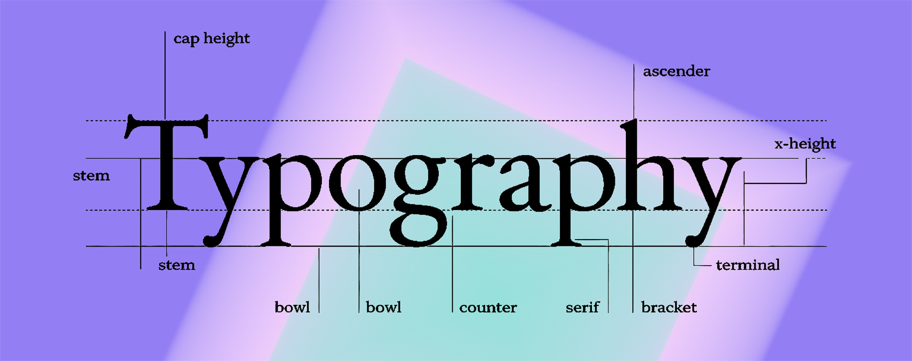

Typography Overview

A Brief History of Typography.
Johannes Gutenberg helped spark a European typeface evolution in the 1400s, when he invented the first metal movable-type printing press. Gutenberg used old style blackletter calligraphy letterforms (aka Gothic) to typeset longer lines of text for manuscripts and religious texts. Printers in Italy soon created a simpler, more compact typeface originally called Antiqua, now better known as Roman. European printers then launched italic typefaces, typesetting even more words per page.
Fast-forward to the late 1700s and early 1800s, when the first modern serif typefaces entered the market. Sans-serif typefaces followed, dominating the European print world until the 20th century. That's when cleaner, more legible typefaces such as Times New Roman, Futura, Helvetica, and Arial took over. Today, graphic and web designers worldwide access large libraries of typefaces and fonts.
What is Typography?
Typography in design involves creating or selecting a system of typefaces and fonts to express the written word. This creative art form can evoke strong emotions, use visually appealing letters and arrange type to express your brand personality. Well-crafted typography can enhance clear communication, with easy legibility and readability.
Key Typography Terms:
- Typeface vs. font: the design family vs. the specific file/weight
- Hierarchy: visual order that guides reading
- Kerning: spacing between individual letter pairs
- Tracking: overall letter-spacing
- Leading: line spacing
- Baseline: the line text "sits" on
- X-height: height of lowercase letters (impacts legibility)
- Serif vs. sans-serif: style categories that signal tone
- Contrast: difference between type + background (critical for accessibility)
- Legibility vs. readability: recognizing letters vs. reading comfortably